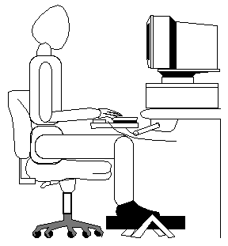
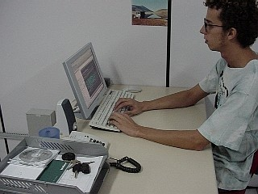

Já são quase 10 anos trabalhando com informática, ficando 8 horas por dia na frente da máquina. Também uso o computador em casa, aumentando a carga horária semanal que passo sentado, digitando.
Felizmente nunca sofri de dores nos pulsos, braços ou costas e nunca tive sintomas de DORT (antigamente chamada de LER). Acredito que alongamentos e o posicionamento correto na máquina são essenciais para evitar problemas.
As dicas seguintes funcionam para mim. Não há nenhum embasamento médico ou científico, é experiência pessoal.
O Posicionamento

A figura à direita é a posição clássica recomendada na maioria dos documentos que li sobre o uso correto do computador. Mas pra mim simplesmente não funciona. Esse negócio de deixar o braço pendurado sem apoio me causa dores em poucos minutos de uso, e o pulso estala quando girado.
Da cintura para baixo tudo bem, a posição das pernas em 90 graus é o que uso. Embora a figura indique que as pernas devam ficar juntas, com os joelhos próximos, isso é coisa de frutinha. As pernas abertas com os joelhos afastados dá uma base mais firme e confortável. Além de não causar superaquecimento nas partes vitais ;)
É esquisito, mas colocar um ou ambos os pés na cadeira, ficando com a coxa encostada no peito também me é uma posição confortável que posso ficar durante horas sem dores. E ainda tem a vantagem de poder apoiar o queixo no joelho, descansando a cabeça (percebi que estou nessa posição agora). Com os dois pés na cadeira você parece um pássaro empoleirado, então avise seus colegas de trabalho que você não está surtando :)
A altura do monitor é recomendada que seja um pouco abaixo da altura dos olhos, concordo com isso. Usei durante um tempo o monitor bem alto, mas não é bom, dá fadiga.
Após experimentar várias configurações de altura/distância da cadeira/mesa, percebi que independente das medidas, o que me deixava confortável para digitar é estar com o antebraço todo apoiado na mesa, desde o pulso até o cotovelo (vide foto).
 Só tem que cuidar para ficar com a barriga bem perto da mesa, senão as costas ficarão arcadas. Tente se policiar para ficar sempre com a coluna reta. Peça aos colegas de trabalho ou pessoas ao redor para sempre lhe avisarem quando estiver corcunda.
É difícil liberar o espaço para os braços se você tem um monitorzão trambolhoso CRT de trocentas polegadas. O que eu fazia era afastar a mesa da parede e colocar um apoio pequeno embaixo do monitor. Assim a "bunda" dele fica para fora da mesa e o teclado pode ficar mais afastado.
No esquema de bancadas de trabalho, o melhor lugar é bem na quina, no canto da parede onde os dois braços ficam apoiados confortavelmente num ângulo mais aberto, um em cada bancada. Essa posição lhe permite deixar as costas para trás até, muito bom.
As Vistas
Lá por meados de 2002, minha vista começou a arder e todos os dias eu voltava para casa com os olhos irritados, vermelhos e lacrimejando. Dores de cabeça acompanhavam os sintomas de vez em quando. Culpado: o monitorzão trambolhão CRT brilhante.
A solução seria trocar o monitor por um LCD (aqueles fininhos, tipo de notebook - igual o da foto anterior), que não emitem brilho e podem ser usados durante várias horas sem causar desconforto.
A empresa não me compraria um monitor desses. Eu entendo. Além de ser caro, todos os outros funcionários iriam querer também. Como a saúde está acima de tudo, encarei o investimento e comprei um monitor LCD 15" da Sony e levei para a empresa.
Valeu cada centavo. Da noite para o dia, acabaram todos os meus problemas de ardência nos olhos e dores de cabeça. Foi mágico.
Obs.: O engraçado é que eu achei o monitor por acaso, num bilhete escrito à mão no mural de classificados do mercadinho lá de Canasvieiras, em Floripa. Em meio a anúncios do tipo "Vendo batedeira e TV preto e branco" estava lá o do monitor: "Vendo monitor fininho Sony tipo exportação". Surreal. Bizarro.
Comentário de Fernando Henrique Ferraz P. da Rosa: De fato os monitores LCD não tem o problema de causar fadiga visual, mas a solução nem sempre precisa envolver jogar fora o CRT. É possível melhorar o problema no CRT ajustando a taxa de atualização (refresh rate). Quanto maior a taxa, menor cansaço visual. Como regra de dedo, até 60hz é bem ruizinho para os olhos. 70 Hz (de preferência 85hz ou mais) já resolve o problema. Eu lembro que em meados de 1998 tive o mesmo problema que você descreveu: dores de cabeça e olhos lacrimejando após usar o monitor. Como naquela época LCD tava fora de cogitação, eu acabei comprando um LG 575N, que permitia usar 85Hz de refresh rate à 1280x768 (isso num monitor de 15 polegadas!), e o problema se resolveu...
Alongamentos e Pausas
Os médicos aconselham pausas de 10 minutos a cada 1 hora de trabalho. Bem, para mim isso é totalmente inviável. Quando se está concentrado programando, é comum passar horas ali codificando, com fome, com vontade de ir no banheiro, mas você simplesmente não consegue parar. Na maioria das vezes por puro esquecimento. Parece que os sentidos são deixados em segundo plano e quando você vê, horas se passaram.
O que faço é me esticar nos intervalos, quando não estou programando nem escrevendo. Nada metódico ou regular. Simplesmente se alongar no melhor estilo felino: intuitivamente. Primeiro uma esticada geral no corpo para "checar" se está tudo em ordem e depois alongar melhor as partes que aparentam estar cansadas, que geralmente são costas, braços e pulso. Só isso, nada complicado ou demorado.
As pausas são geralmente para ir ao banheiro ou pegar um copo d'água. Antes eu esquecia de beber água, mas agora me policio para lembrar. É um ciclo vicioso de saúde. Quanto mais água você beber, mais vai precisar ir ao banheiro e mais pausas e pequenas caminhadas fará. É bom para quebrar um pouco a ditadura da concentração também.
O almoço acho uma parte importantíssima do dia de trabalho. É essencial "desbaratinar" por completo do serviço. Tem gente que almoça sanduíche na frente do monitor ou come no refeitório da empresa e nem sai para dar uma respirada. Eu abomino isso. O almoço é bom para ver o sol, respirar, conversar, passear, caminhar. Esse intervalo ajuda a voltar para o trabalho de cabeça limpa, renovada.
A Digitação
O uso do teclado influi bastante na fadiga também. Antigamente eu costumava "dar porrada" no teclado, digitando com força. Às vezes sentia um pouco de dor na ponta dos dedos e nas juntas. Então comprei um teclado macio e aprendi a digitar o mais suave possível (meio gay isso, mas enfim...). O fato é que digitando sem fazer força eu não sinto mais dores, consigo digitar mais rápido e ainda poupo a saúde do teclado também ;)
Outra dica valiosa que li e sigo à risca é usar as duas mãos para fazer combinações de teclas (combos), tipo apertar Ctrl+R. É possível fazer usando apenas a mão esquerda, mas é uma ginástica para os dedos e o pulso, podendo causar lesões com o tempo. Usar as duas mãos é Zen.
Arrancar a tecla CAPS LOCK também ajuda a preservar seu pulso e sua sanidade ;)
{kind=link}